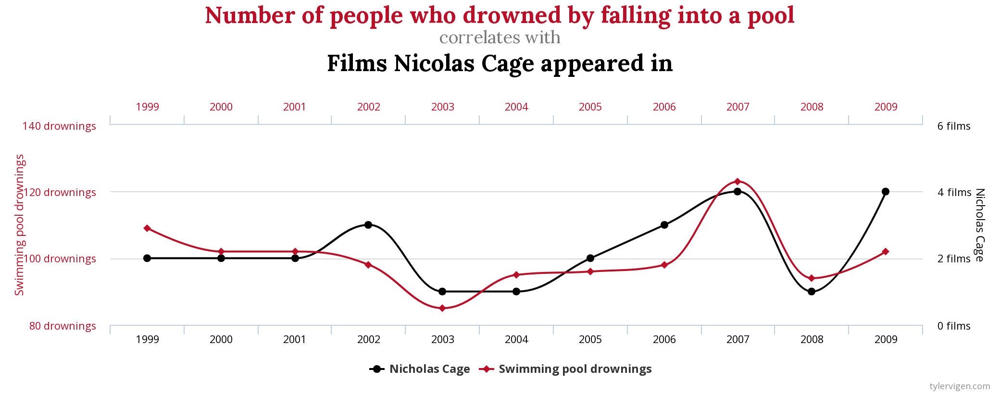
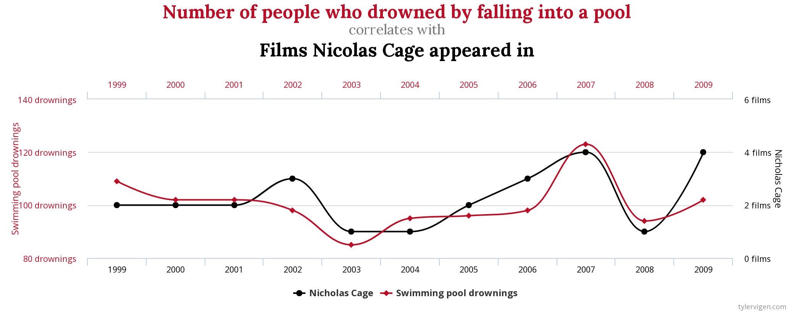

Chapter4 Basic Concepts
4.1 Time Series
A time series is a serially sequenced set of values representing a variable value at different points in time (VanLear, “Time Series Analysis”). It consists in measures collected through time, at regular time intervals, about an unit of observation, resulting in a set of ordered values. This regularity is the frequency of time series (which can be, for instance, hourly, weekly, monthly, quarterly, yearly etc.).
Time series data are different from cross-sectional data, which are set of data observed on a sample of units taken at a given point in time, or where the time dimension is not relevant and can be ignored. Cross-sectional data are a snapshot of a population of interest at one particular point in time, while time series show the dynamical evolution of a variable over time. Panel data combine cross-sectional and time series data by observing the same units over time.
Time is a fundamental variable in time series. It is often not relevant in other types of statistical analyses. Also from a sociological perspective (and psychological as well), we can see that past events influence future behaviors. Oftentimes, we can make reasonable prediction about future social behaviors just by observing past behaviors. Actually, social reproduction of behaviors over time and predictability of future social behaviors based on past experience and shared knowledge are essential to social order, and thus, a fundamental dimension of human society.
From a statistical perspective, the impact of time resulting from repeated measurements over time on a single subject or unit, introduce a dependency among data points which prevents the use of some of the most common statistical techniques. In cross-sectional data, observations are assumed to be independent: values observed on one unit has no influence on values observed on other units. Time series observations have a different nature: a time series is not a collection of independent observations, or observations taken on independent units, but a collection of successive observations on the same unit. Observations are not taken across units at the same time (or without regards to time), but across time on the same unit.
When dealing with time series data, time is an important factor to be taken into account. It introduces a new dimension to the data. For instance, we can calculate how a variable increases or decreases over time, if it peaks at a given moment in time, or at regular intervals. We consider not just if, and how much, a variable is correlated with another variable, but if there is a correlation over time among them, if the peaks in one variable precedes the peaks in the other one, or how much time it requires for a variable to have an impact on another one, and how much this impact changes over time.
Importantly, when dealing with time series data, we have to to acknowledge that sampling adjacent points in time introduces a correlation in the data. This serial dependency creates correlated errors which violates the assumptions of many traditional statistical analyses and can bias the estimation of error for confidence intervals or significance tests. This characteristic of time series data, in general, precludes the use of common statistical approaches such as linear regression and correlation analysis, which assume the observations to be independent.
The application of “standard” statistical techniques to time series data might lead to foolish, and totally unreliable results. For instance, the statisticians George Udny Yule wrote:
«It is fairly familiar knowledge that we sometimes obtain between quantities varying with the time (time-variables) quite high correlations to which we cannot attach any physical significance whatever, although under the ordinary test the correlation would be held to be certainly “significant.” (…) the occurrence of such “nonsense-correlations” makes one mistrust the serious arguments that are sometimes put forward on the basis of correlations between time-series. […] When the successive x’s and y’s in a sample no longer form a random series, but a series in which successive terms are closely related to one another, the usual conceptions (of correlation, ed.) to which we are accustomed fail totally and entirely to apply» (Yule, G.U. (1926). Why do we sometimes get nonsense-correlations between Time-Series? A study in sampling and the nature of time-series. Journal of the royal statistical society, 89(1), 1-63.)
A funny website reporting spurious time series correlation is tylervigen.com.
 

Despite it can be funny to see these improbable correlations, we have to keep in mind that adopting the right approach to analyze data is a serious issue when doing research. In a paper in the American Journal of Political Science, we can read, for instance:
The results of the analysis below strongly suggest that the way event counts have been analyzed in hundreds of important political science studies have produced statistically and substantively unreliable results. Misspecification, inefficiency, bias, inconsistency, insufficiency, and other problems result from the unknowing application of two common methods that are without theoretical justification or empirical utility in this type of data.
Due to the peculiarity of time series data, time series analysis has been developed as a specific statistical methodology appropriate for the analysis of time-dependent data. Time series analysis aims at providing an understanding of the underlying processes and patterns of change over time of a unit of observation and the relations between variables observed over time, handling the time structure of the data in a proper way.
4.2 Time Series Analysis
Time series analysis is an approach employed in many disciplines. Almost every field of study has data characterized by a time development, and every phenomenon with a temporal dimension can be conceived as a time series and analyzed through time series analysis methods. Time series analysis is an important part of data analysis in disciplines such as economics, to analyze, for instance, inflation trends; marketing, to analyze the number of clients of a store or the number of accesses to an e-commerce website; demography, to study the growth of national population over time or trends in population ageing; engineering, to analyze radio frequencies; and neurology, to analyze brain waves detected through electroencephalograms. Political science can be interested in studying patterns in the alternation of political parties in government, and digital communication can use time series analysis to study series of tweets using a hashtag, the news media coverage on a certain topic, or the trends in user searches on search engines, such as those provided by Google Trends.
About the use of time series analysis in communication science, it can be observed that:
“Many of the major theories and models in our field contain time as a central player: the two-step flow, cultivation, spiral-of-silence, agenda-setting, framing, and communication mediation models, to name a few (Nabi & Oliver, 2009). Each articulates a set of processes that play out in time: Messages work their way through media systems and networks, citizens perceive the world around them and decide to communicate, or not, and they make choices about participation, presumably as a product of a process that includes communication exposure. Indeed, the words that animate our field—effect, flow, influence, dynamic, cycle—reveal our understanding of communication as a process, and processes have temporal dimensions (Box-Steffensmeier, Freeman, Hitt, & Pevehouse, 2014). The perspective of time series analysis can help expand our notions of time’s role in these dynamics. We see several ways in which we can become more attentive to time in our field”. Wells, C., Shah, D. V., Pevehouse, J. C., Foley, J., Lukito, J., Pelled, A., & Yang, J. (2019). The Temporal Turn in Communication Research: Time Series Analyses Using Computational Approaches. International Journal of Communication (19328036), 13.
“One of the most common applications of time series analyses in mass communication is in agenda-setting research. The approach is to correlate the national news coverage on a topic over time with public opinion or public policy on that topic, often to estimate lagged effects or the decay of effects over time. Likewise, both trends and cycles of television programming, viewing, and advertising, have been explored through time series analyses. In the interpersonal literature, the most popular and one of the most important applications of time series analysis has been the investigation of mutual adaptation in the form of patterns of reciprocity or compensation between conversational partners over the course of an interaction.” (C. Arthur VanLear, “Time Series Analysis”, in Allen, M. (Ed.). (2017). The SAGE encyclopedia of communication research methods. Sage Publications).
In general, we can distinguish at least the following objectives of a time series analysis study:
- DESCRIPTION: Description of a process characterized by an intrinsic temporal dimension. Simple examples of related questions are: is there an upward trend? Is there a peak at a certain point in time? Is there a regular pattern recurring every year, at a particular moment in time? Descriptive questions like these can be answered via descriptive time series analysis.
- EVALUATION: Evaluation of the impact of a certain event, occurring at a particular point in time, on a process. For instance: did a change in social media moderation policy, such as those that led to banning accounts linked to conspiracy theories, impact the quantity of fake news shared online by users? Specific time series techniques can be used to perform this kind of analysis.
- EXPLANATION: Explanation of a phenomenon characterized by a time series structure on the basis of related variables. For instance: does the quantity of news shared on Facebook help explain the polarization of the debate online? Does the volume of news media articles on a topic help explain the growth of the debate online on the same topic? Inferential statistical techniques, such as regression models developed for time series, are used to answer questions like these.
- FORECASTING: Prediction of the future values of a process. For instance: can we expect that news media coverage on a certain topic will keep growing in the near future? This is the subject of time series forecasting.
We can also distinguish between univariate and multivariate time series analysis. Time series analysis can be used to explain the temporal dependencies within and between processes. By temporal dependency within a social process, we mean that the current value of a variable is, in part, a function of previous values of that same variable. To analyze the univariate structure of time series, univariate techniques are used. Temporal dependency between social processes, conversely, indicates that the current value of a variable is in part a function of the previous values of other variables. Multivariate time series analysis is used to explain the relations between time series.
4.3 Stochastic and Deterministic Processes
A general distinction can be made between time series, based on their deterministic or non-deterministic nature.
A deterministic time series is one which can be explicitly expressed by an analytic expression. It has no random or probabilistic parts. It is always possible to exactly predict its future behavior, and state how it behaved in the past. Deterministic processes are pretty rare when dealing with individual and social behaviors! Predicting future behaviors of a crowd, of a person, of a social group, can be reasonably possible, sometimes, based on past behaviors and other contextual information, since human behavior is partly influenced by the past. However, it is not totally determined by the past. There is always a certain degree of uncertainty in the prediction; human behaviors are, generally speaking, not fully predictable.
Social and individual behaviors, therefore, are non-deterministic. A non-deterministic time series cannot be fully described by an analytic expression. It has some random, or probabilistic component, that prevents its behavior from being explicitly described. It could be possible to say, in probabilistic terms, what its future behavior might be. However, there is always a residual, unpredictable, component. A time series may be considered non-deterministic also because all the information necessary to describe it explicitly is not available, although it might be in principle, or because the nature of the generating process, or part of it, is inherently random. We can say that the time series analyzed in social science have always, at least, a stochastic component that makes them not totally deterministic.
Since non-deterministic time series have a random component, they follow probabilistic rather than deterministic laws. Random data are not defined by explicit mathematical relations, but rather in statistical terms, that is, by probability distributions and parameters such as mean and variance. Non-deterministic time series can be analyzed by assuming that they are manifestations of probabilistic or stochastic processes.